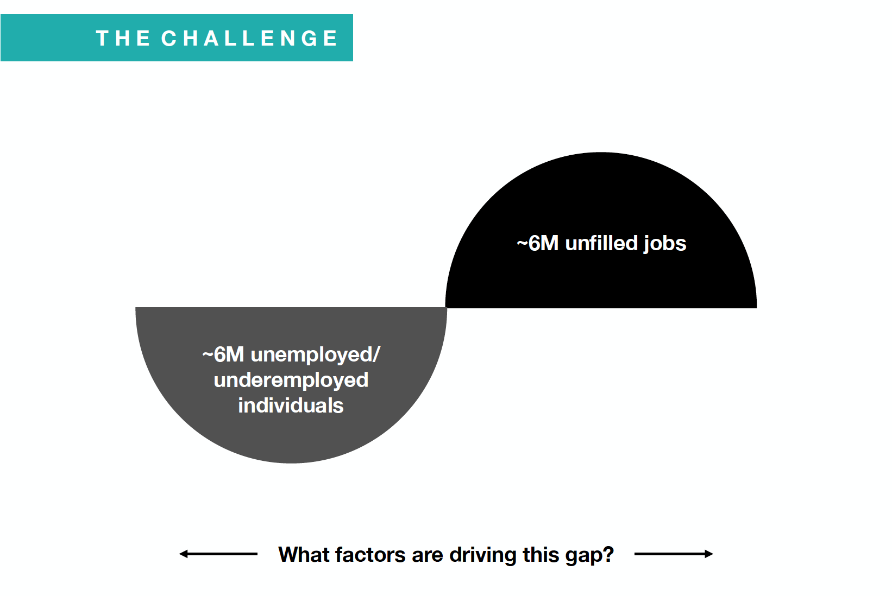

Client: Citi Ventures, the entrepreneurial division of Citi Bank
In collaboration with: Damesh Kirabayeva, Victor Michud, and Nicole Rifai
Generative Research: ethnographic, in-depth interviews, diary studies, user interviews, literature reviews, storyboarding, affinity mapping, ecosystem mapping, context mapping. Evaluative Research: Usability Tests, Survey Design, Content Evaluation
Design Research is tied with design thinking, which comes from decades of research in the social sciences field. It can provide us a starting point that might lead us to human behavioral patterns that we can continue discovering in the research process.
Decades of social sciences have taught us that we are able to analyze human behaviors and patterns, yet, these are adaptable. What has been said? We stumbled upon an interesting theory that gave us a solid foundation to build hypotheses moving forward.

What we did? 1:1 Interviews, Participatory Workshops (Context Mapping, Card Sorting, and Ecosystem Mapping), and Ethnographic Field Studies


Were we focusing on the right problem? Is the problem about unfilled positions and a high unemployment rate? Not really, but that was a consequence. The problem lies that people change careers more often than before with the purpose of finding a "higher calling". People don't want to waste time in an unfulfilling job, no matter the pay. Career changers ARE job seekers, they just needed a guidance, something that helped them define their CAREER IDENTITY.
Like Ulysses trying to find Ithaca, career changers are looking their own thread, a job that resonates with them. Here's our design recommendation:


Here's the link to the Odyssey prototype: and the link for the Document we crafted for the Client and Parsons: